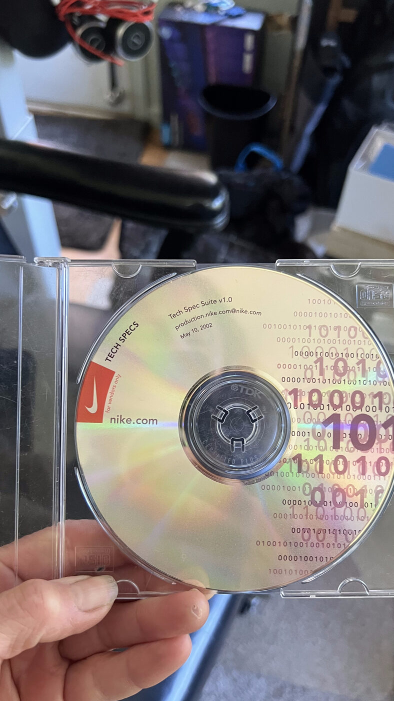
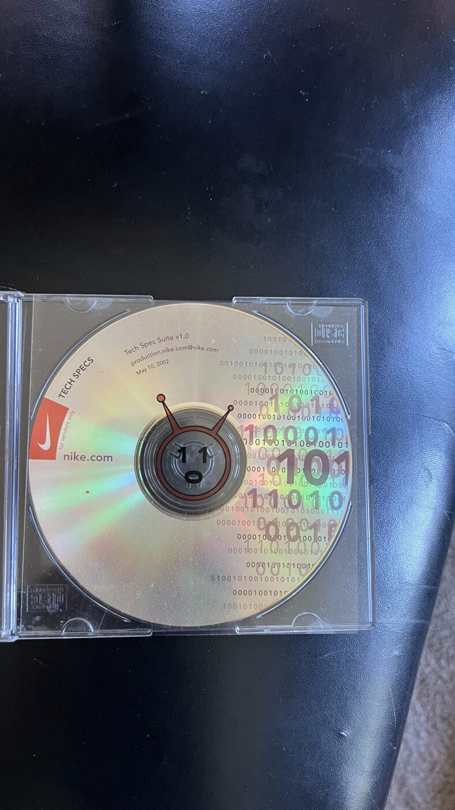

Tech Spec Suite v1.0 · production.nike.com@nike.com · May 10, 2002
Authored & maintained by Kristin Boden · distributed to Nike's global brand vendors & agencies on CD
This is the technical-specification package I authored and maintained for nike.com — the single source of truth that let Nike's global network of creative agencies and development vendors build brand sites on a consistent, stable, secure foundation. It shipped as a branded CD-ROM (pictured), and — as with everything at Nike — the craft went right down to the disc art.

The disc: "TECH SPECS," nike.com swoosh, Tech Spec Suite v1.0 (May 10, 2002).

The craft in the details — binary-code art and a little robot on the hub.
What was in the suite
Overview
Tech Specs :: Overview — the entry point and guidelines for building on nike.com
Creative standards
Regional Style Guide
Locator Bar
Pop-up Windows
Technical standards
Brand API
Database Code Specs
Programming Standards
Documentation Index
Browser Detection
QA Specs
rsync (deployment) User Guide
Bastion Host — secure deployment access
Why it mattered. Dozens of external agencies and internal teams built on nike.com. This suite is how one person kept that ecosystem consistent, on-brand, performant, and secure — the same governance-and-enablement instinct that later scaled to a 375-property university platform and, today, to AI adoption. (A working example of "translate the complex into something everyone can build on.")
Archive page. The original suite was an image-mapped HTML index linking to detailed PDF specifications (overview, style guide, brand API, programming standards, QA, deployment, and more). Full PDFs available on request.